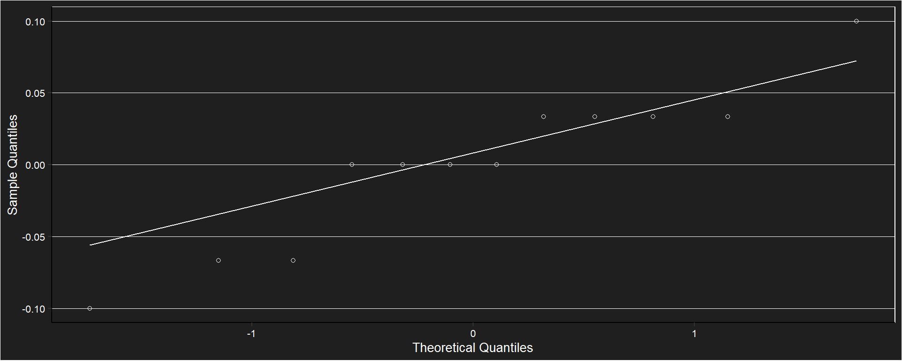
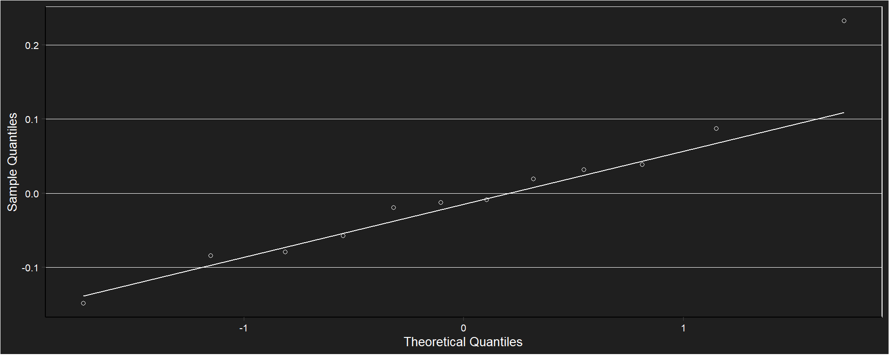
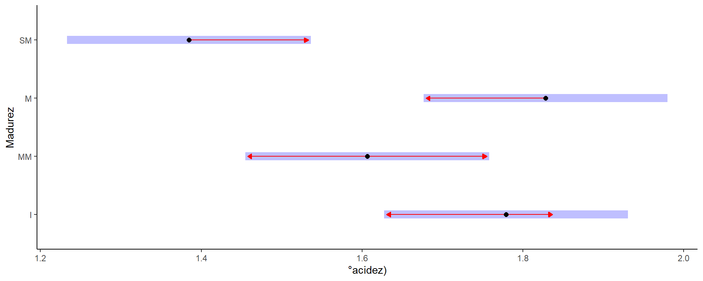

Sólidos solubles y acidez
Sólidos Solubles
Tabla resumen
| madurez | n | Mean | sd |
|---|---|---|---|
| I | 3 | 7.56666667 | 0.057735027 |
| MM | 3 | 6.00000000 | 0.000000000 |
| M | 3 | 8.16666667 | 0.057735027 |
| SM | 3 | 10.10000000 | 0.100000000 |
Gráfico de puntos

Modelo
## Generalized least squares fit by REML
## Model: brix ~ madurez
## Data: data_mad_quimico
## Log-restricted-likelihood: 8.37382285
##
## Coefficients:
## (Intercept) madurezMM madurezM madurezSM
## 7.56666667 -1.56666667 0.60000000 2.53333333
##
## Degrees of freedom: 12 total; 8 residual
## Residual standard error: 0.0645497224Supuestos 
##
## Shapiro-Wilk normality test
##
## data: brix_mad_ajuste$residuos
## W = 0.9142881, p-value = 0.242045Anova
## Denom. DF: 8
## numDF F-value p-value
## (Intercept) 1 182405.0000 <.0001
## madurez 3 2068.4667 <.0001Test de Tukey
## $emmeans
## madurez emmean SE df lower.CL upper.CL
## I 7.56666667 0.0372677996 8 7.48072697 7.65260637
## MM 6.00000000 0.0372677996 8 5.91406030 6.08593970
## M 8.16666667 0.0372677996 8 8.08072697 8.25260637
## SM 10.10000000 0.0372677996 8 10.01406030 10.18593970
##
## Degrees-of-freedom method: df.error
## Confidence level used: 0.95
##
## $contrasts
## contrast estimate SE df t.ratio p.value
## I - MM 1.56666667 0.0527046277 8 29.725 <.0001
## I - M -0.60000000 0.0527046277 8 -11.384 <.0001
## I - SM -2.53333333 0.0527046277 8 -48.067 <.0001
## MM - M -2.16666667 0.0527046277 8 -41.110 <.0001
## MM - SM -4.10000000 0.0527046277 8 -77.792 <.0001
## M - SM -1.93333333 0.0527046277 8 -36.682 <.0001
##
## Degrees-of-freedom method: df.error
## P value adjustment: tukey method for comparing a family of 4 estimatespH inicial
Tabla resumen
| madurez | n | Mean | sd |
|---|---|---|---|
| I | 3 | 3.41000000 | 0.337786915 |
| MM | 3 | 3.17000000 | 0.017320508 |
| M | 3 | 2.33333333 | 0.265015723 |
| SM | 3 | 3.35333333 | 0.070945989 |
Gráfico de puntos

Modelo
## Generalized least squares fit by REML
## Model: ph ~ madurez
## Data: data_mad_quimico
## Log-restricted-likelihood: -1.35360686
##
## Coefficients:
## (Intercept) madurezMM madurezM madurezSM
## 3.4100000000 -0.2400000000 -1.0766666667 -0.0566666667
##
## Degrees of freedom: 12 total; 8 residual
## Residual standard error: 0.217753683Supuestos
##
## Shapiro-Wilk normality test
##
## data: ph_mad_ajuste$residuos
## W = 0.9163154, p-value = 0.256845Anova
## Denom. DF: 8
## numDF F-value p-value
## (Intercept) 1 2380.035149 <.0001
## madurez 3 15.785823 0.001Test de Tukey
## $emmeans
## madurez emmean SE df lower.CL upper.CL
## I 3.41000000 0.125720148 8 3.12008882 3.69991118
## MM 3.17000000 0.125720148 8 2.88008882 3.45991118
## M 2.33333333 0.125720148 8 2.04342215 2.62324451
## SM 3.35333333 0.125720148 8 3.06342215 3.64324451
##
## Degrees-of-freedom method: df.error
## Confidence level used: 0.95
##
## $contrasts
## contrast estimate SE df t.ratio p.value
## I - MM 0.240000000 0.177795138 8 1.350 0.5602
## I - M 1.076666667 0.177795138 8 6.056 0.0014
## I - SM 0.056666667 0.177795138 8 0.319 0.9880
## MM - M 0.836666667 0.177795138 8 4.706 0.0067
## MM - SM -0.183333333 0.177795138 8 -1.031 0.7371
## M - SM -1.020000000 0.177795138 8 -5.737 0.0019
##
## Degrees-of-freedom method: df.error
## P value adjustment: tukey method for comparing a family of 4 estimatesAcidez Total Titulable (%)
Tabla resumen
| madurez | n | Mean | sd |
|---|---|---|---|
| I | 3 | 1.77920000 | 0.050798425 |
| MM | 3 | 1.60640000 | 0.027896953 |
| M | 3 | 1.82826667 | 0.203906384 |
| SM | 3 | 1.38453333 | 0.083527560 |
Gráfico de puntos

Modelo
## Generalized least squares fit by REML
## Model: acidez ~ madurez
## Data: data_mad_quimico
## Log-restricted-likelihood: 3.82915896
##
## Coefficients:
## (Intercept) madurezMM madurezM madurezSM
## 1.7792000000 -0.1728000000 0.0490666667 -0.3946666667
##
## Degrees of freedom: 12 total; 8 residual
## Residual standard error: 0.113922547Supuestos 
##
## Shapiro-Wilk normality test
##
## data: acidez_mad_ajuste$residuos
## W = 0.9316151, p-value = 0.397546Anova
## Denom. DF: 8
## numDF F-value p-value
## (Intercept) 1 2516.049444 <.0001
## madurez 3 9.311241 0.0055Test de Tukey
## $emmeans
## madurez emmean SE df lower.CL upper.CL
## I 1.77920000 0.0657732131 8 1.62752670 1.93087330
## MM 1.60640000 0.0657732131 8 1.45472670 1.75807330
## M 1.82826667 0.0657732131 8 1.67659337 1.97993997
## SM 1.38453333 0.0657732131 8 1.23286003 1.53620664
##
## Degrees-of-freedom method: df.error
## Confidence level used: 0.95
##
## $contrasts
## contrast estimate SE df t.ratio p.value
## I - MM 0.172800000 0.0930173699 8 1.858 0.3163
## I - M -0.049066667 0.0930173699 8 -0.528 0.9500
## I - SM 0.394666667 0.0930173699 8 4.243 0.0121
## MM - M -0.221866667 0.0930173699 8 -2.385 0.1576
## MM - SM 0.221866667 0.0930173699 8 2.385 0.1576
## M - SM 0.443733333 0.0930173699 8 4.770 0.0061
##
## Degrees-of-freedom method: df.error
## P value adjustment: tukey method for comparing a family of 4 estimates
Ratio brix/ATT
Tabla resumen
| madurez | n | Mean | sd |
|---|---|---|---|
| I | 3 | 4.25559907 | 0.146354455 |
| MM | 3 | 3.73580385 | 0.064271127 |
| M | 3 | 4.50076690 | 0.455770799 |
| SM | 3 | 7.31117249 | 0.408541393 |
Gráfico de puntos

Modelo
## Generalized least squares fit by REML
## Model: ratio ~ madurez
## Data: data_mad_quimico
## Log-restricted-likelihood: -4.34022701
##
## Coefficients:
## (Intercept) madurezMM madurezM madurezSM
## 4.25559907 -0.51979522 0.24516783 3.05557342
##
## Degrees of freedom: 12 total; 8 residual
## Residual standard error: 0.316300291Supuestos
##
## Shapiro-Wilk normality test
##
## data: ratio_mad_ajuste$residuos
## W = 0.9228741, p-value = 0.310626Anova
## Denom. DF: 8
## numDF F-value p-value
## (Intercept) 1 2939.944083 <.0001
## madurez 3 77.298621 <.0001Test de Tukey
## $emmeans
## madurez emmean SE df lower.CL upper.CL
## I 4.25559907 0.182616058 8 3.83448569 4.67671246
## MM 3.73580385 0.182616058 8 3.31469047 4.15691724
## M 4.50076690 0.182616058 8 4.07965352 4.92188029
## SM 7.31117249 0.182616058 8 6.89005910 7.73228587
##
## Degrees-of-freedom method: df.error
## Confidence level used: 0.95
##
## $contrasts
## contrast estimate SE df t.ratio p.value
## I - MM 0.51979522 0.258258106 8 2.013 0.2597
## I - M -0.24516783 0.258258106 8 -0.949 0.7804
## I - SM -3.05557342 0.258258106 8 -11.831 <.0001
## MM - M -0.76496305 0.258258106 8 -2.962 0.0702
## MM - SM -3.57536864 0.258258106 8 -13.844 <.0001
## M - SM -2.81040559 0.258258106 8 -10.882 <.0001
##
## Degrees-of-freedom method: df.error
## P value adjustment: tukey method for comparing a family of 4 estimates